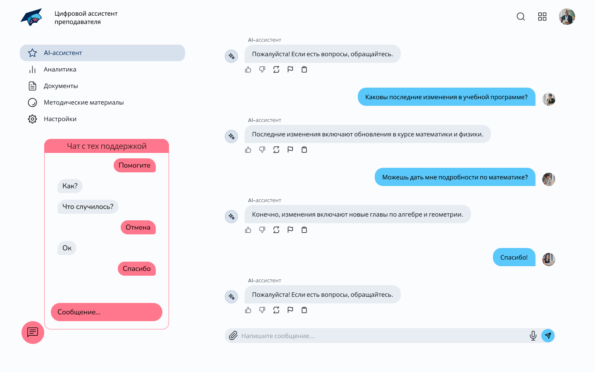

Цель проекта: создание удобного цифрового инструмента для автоматизации рутинных образовательных и методических задач преподавателей.
Современные преподаватели сталкиваются с высокой нагрузкой, связанной с анализом успеваемости студентов, выявлением пробелов в знаниях, подготовкой отчетов и ведением документации. Эти рутинные задачи отнимают значительное количество времени, снижая эффективность образовательного процесса. Использование цифрового AI-ассистента позволит автоматизировать эти процессы, повысить продуктивность преподавателей и улучшить качество образования
